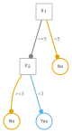
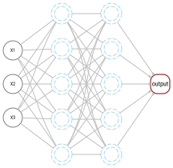
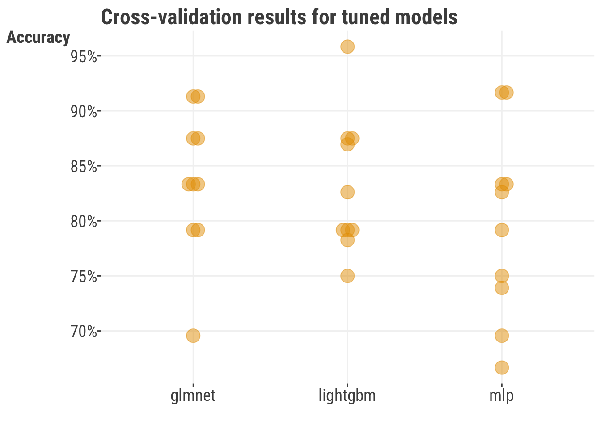
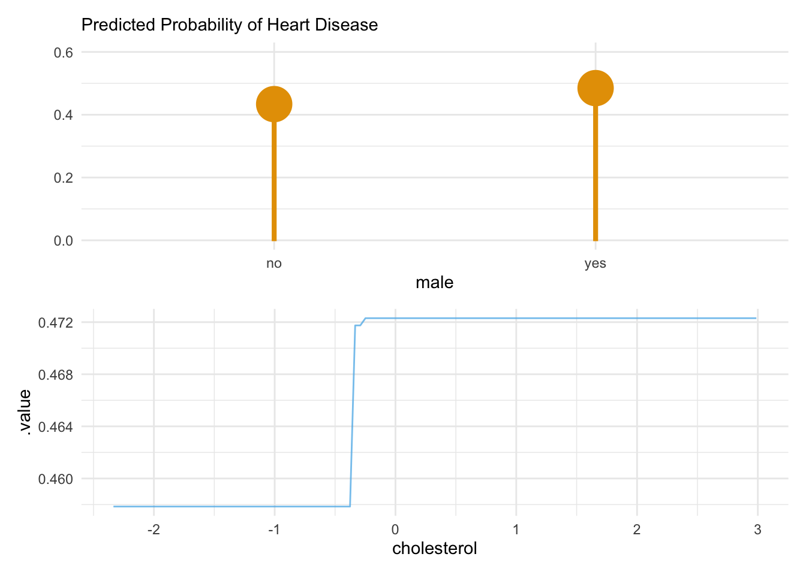

import pandas as pd
import numpy as np
df_heart = pd.read_csv('data/heart_disease_processed.csv')
df_heart_num = pd.read_csv('data/heart_disease_processed_numeric_sc.csv')
# convert appropriate features to categorical
for col in df_heart.select_dtypes(include='object').columns:
df_heart[col] = df_heart[col].astype('category')
X = df_heart_num.drop(columns=['heart_disease']).to_numpy()
y = df_heart_num['heart_disease'].to_numpy()
# some models can't automatically handle missing data
y_complete = df_heart_num.dropna()['heart_disease'].to_numpy().astype(int)
X_complete = df_heart_num.dropna().drop(columns='heart_disease').to_numpy()7 Common Models
Let’s get one thing straight from the outset: any model may be used in machine learning, from a standard linear model to a deep neural network. The key focus in ML is on performance, and generally we’ll go with what works. This means that the modeler is often less concerned with the interpretation of the model, but rather with the ability of the model to predict well on new data, but as we’ll see we can do both if desired. In this chapter, we will explore some of the more common machine learning models and techniques.
7.1 Key Ideas
The take home messages from this section include the following:
- Any model can be used with machine learning
- A good and simple baseline is essential for interpreting your performance results
- One only needs a small set of tools (models) to go very far with machine learning
7.1.1 Why this matters
Having good choices in your data science toolbox means you don’t have to waste time with nuance and can get down to what matters- performance! Furthermore, using these common tools means you’ll know you’re in good company, and that you’ll be able to find many resources to help you along the way. Additionally, you’ll be able to focus on the data and the problem at hand, rather than the model, which in the end, is just a tool to help you understand the data. If you can get a good understanding of the data with a simple model, then that may be all you need for your situation. If you decide you need a more complex modeling approach, then using these models will still give you a good idea of what you should expect in terms of performance.
7.1.2 Good to know
TODO: ADD LINK TO ESTIMATION CHAPTER
Before diving in, it’d be helpful to be familiar with the following:
7.2 General Approach
Let’s start with a general approach to machine learning to help us get some bearings. Here is an example outline of the process we could take. This incorporates some of the ideas we’ve already discussed, and we’ll demonstrate most of this in the following sections.
- Define the problem, including the target variable(s)
- Select the model(s) to be used, including one baseline model
- Define the performance objective and metric(s) used for model assessment
- Define the search space (parameters, hyperparameters) for those models
- Define the search method (optimization)
- Implement some sort of cross-validation technique and collect the corresponding performance metrics
- Evaluate the results on unseen data with the chosen model
- Interpret the results
Here is a more concrete example:
- Define the problem: predict the probability of heart disease given a set of features
- Select the model(s) to be used: ridge regression, standard regression with no penalty as baseline
- Define the objective and performance metric(s): (R)MSE, R-squared
- Define the search space (parameters, hyperparameters) for those models: penalty parameter
- Define the search method (optimization): grid search
- Implement some sort of cross-validation technique: 5-fold cross-validation
- Evaluate the results on unseen data: RMSE on test data
- Interpret the results: the ridge regression model performed better than the baseline model, and the coefficients tell us something about the nature of the relationship between the features and the target
As we go along in this chapter, we’ll most of this in action at various points. We’ll have a baseline model, an ultimately provide examples of several commonly used models in machine learning. In each case we will assess performance using cross-validation, and then evaluate the final models on unseen data. Separately, we’ll also demonstrate how to tune hyperparameters, which are parameters that are not estimated directly from the data, but rather are set by the modeler. We’
7.3 Data setup
FIXME: add appendix link for dataset! LINK to DATA Sections!
For our demonstration here, we’ll switch things up and use the heart disease dataset. This is a binary classification problem, where we want to predict whether a patient has heart disease, given information such as age, sex, resting heart rate etc. For more details see the appendix. We have done some initial data processing so that you can dive right in.
There are two forms of the data - one which is mostly as seen elsewhere, and one that is purely numeric, where the categorical features are dummy coded and where numeric variables have been standardized (Section 9.2). The purely numeric version will save any additional data processing for some model/package implementations. We also have to drop missing values, so that our 21 century packages don’t hurt themselves on them. When we get to the boosting demonstration, you can use the data as is, since the scale of the data doesn’t really matter, and missing values are treated in the same way as the rest of the data values.
In this data, roughly 54% suffered a death, so that is an initial baseline if we’re interested in accuracy- we could get 46% correct by just guessing the majority class.
library(tidyverse)
df_heart = read_csv("data/heart_disease_processed.csv") |>
mutate(across(where(is.character), as.factor))
df_heart_num = read_csv("data/heart_disease_processed_numeric_sc.csv")
# as a data.frame for mlr3
X_num_df = df_heart_num %>%
as_tibble() |>
mutate(heart_disease = factor(heart_disease)) |>
janitor::clean_names() # remove some symbols7.4 Do Better than the Baseline
CAN WE GET A VISUAL IN HERE SOMEWHERE?
Before getting carried away with models, we should try and get something that gives us a good reference point for performance - a baseline model. The baseline model should serve as a way to gauge how much better your model performs over one that is simpler, probably more computationally efficient, and more interpretable. Or maybe it’s one that is sufficiently complex to capture something about the data you are exploring, but not as complex as the models you’re also interested in. Take a classification model for example. We use a logistic regression as abseline, which is as simple as it gets, but is often too simple to be adequately performant for many situations. Even so, we should still be able to beat it with more complex models, or there is little justification for using them.
7.4.1 Why do we do this?
You can actually find articles in which deep learning models do not even beat a logistic regression on some datasets, but the fact of which did not stop the authors writing several pages hyping the more complex technique. Probably the most important reason to have a baseline is so that you can avoid wasting time and resources implementing more complex tools, or simply getting excited for no good reason. It is probably rare, but sometimes relationships for the chosen features and target are mostly or nearly linear and have little interaction, and no amount of fancy modeling will make it come about. Furthermore, if our baseline is a complex linear model that actually incorporates nonlinear relationships and interactions (e.g. a GAMM), you’ll often find that the more complex models don’t significantly improve on the baseline by much, if at all. In addition, in time series settings, a moving average or last target value can often be a very good predictor. So in general, you may find that the initial baseline model is good enough for the time being, and you can then move on to other problems to solve, like acquiring data that is functionally predictive. This is especially true if you are working in a business setting where you have limited time and resources.
A final note. In many (most?) settings, it often isn’t enough to merely beat the baseline model. You should look to do statistically better. For example, if your complex model accuracy is 75% and your baseline is 73%, that’s great, but you should check to see if that difference is statistically significant1, because those metrics are estimates, and they have uncertainty, which means you can get a range for them as well as test whether they are different from one another. If the difference is not notable, then you should probably stick with the baseline model or try something else, because the next time you run the model, the baseline may actually perform better, or at least you can’t be sure that it won’t.
That said, in some situations any performance increase is worth it, and even if we can’t be certain a result is statistically better, any sign of improvement is worth pursuing. For example, if you are trying to predict the next word in a sentence, and your baseline is 10% accurate, and your complex model is 11% accurate, that’s a 10% increase in accuracy, which may be a big deal for user experience. You should still work to show that this is a consistent increase and not a fluke.
7.5 Penalized Linear Models
TODO: ADD LINK TO ESTIMATION CHAPTER
So let’s get on with some models already! Let’s use the classic linear model as our starting point for ML, just because we can. We show explicitly how to estimate models like lasso and ridge regression in Section 3.8. Those work well as a baseline, and so should be in your ML toolbox.
7.5.1 Elastic Net
Another common linear model approach is elastic net, which is a combination of lasso and ridge. We will not show how to estimate elastic net by hand here, but all you have to know is that it combines two penalties, the same ones for lasso and one for ridge, along with the standard objective for a numeric or categorical target. The relative size of the two penalties is controlled by a mixing parameter, and the optimal value of that parameter is determined by cross-validation. So for example, you might end up with a 75% lasso penalty and 25% ridge penalty. In the end though, we’re just going to do a slightly fancier logistic regression!
Let’s apply this to the heart disease data. We’ll used the ‘processed version’ which has dummy codes and has dropped the few observations with missing values. We are only doing simple cross-validation here to get a better performance assessment, but you are more than welcome to tune both the penalty parameter and the mixing ratio as we have demonstrated before. We’ll revisit hyperparameter tuning towards the end of this chapter.
from sklearn.linear_model import LogisticRegression, LogisticRegressionCV
from sklearn.model_selection import cross_validate, KFold, cross_val_score
from sklearn.metrics import accuracy_score
model_elastic = LogisticRegression(
penalty='elasticnet',
solver='saga',
l1_ratio=0.5,
random_state=42,
max_iter=10000,
verbose=False,
)
# model_elastic.fit(X_complete, y_complete)
# use cross-validation to estimate performance
cv_elastic = cross_validate(
model_elastic,
X_complete,
y_complete,
cv=5,
scoring='accuracy',
)
# pd.DataFrame(cv_elastic) # default outputTraining accuracy: 0.829
Baseline: 0.541library(mlr3verse)
tsk_elastic = as_task_classif(
X_num_df |> drop_na(),
target = "heart_disease"
)
lrn_elastic = lrn(
"classif.cv_glmnet",
nfolds = 5,
type.measure = "class",
alpha = 0.5
)
cv_elastic = resample(
task = tsk_elastic,
learner = lrn_elastic,
resampling = rsmp("cv", folds = 5)
)
# cv_elastic$aggregate(msr('classif.acc')) # default outputTraining Accuracy: 0.839
Baseline Prevalence: 0.541So we’re starting off with what seems to be a good model. Our average accuracy across the validation sets is definitely doing better than guessing, an increase of almost 55%! Now let’s see if we can do better with other models!
7.5.2 Strengths & Weaknesses
Strengths
- Intuitive approach. In the end, it’s still just a standard regression model you’re already familiar with.
- Widely used for many problems. Lasso/Ridge/ElasticNet would be fine to use in any setting you would use linear or logistic regression.
Weaknesses
- Does not automatically seek out interactions and non-linearity, and as such will generally not be as predictive as other techniques.
- Variables have to be scaled or results will largely reflect data types.
- May have issues with correlated predictors
7.5.3 Additional Thoughts
Incorporating regularization as done with penalized regression would be fine as your default linear model method, and is something to strongly consider for even statistical model settings. Furthermore, these approaches will have better prediction on new data than their standard, nonregularized complements. As such they are a nice balance between staying interpretable while enhancing predictive capability. However, in general they are not going to be as strong of a method as others in the ML universe, and possibly not even competitive without a lot of feature engineering. If prediction is all you care about for a particular modeling setting, you’ll likely want to try something else.
7.6 Tree-based methods
Let’s move beyond standard linear models and get into a notably different type of approach. Tree-based methods are a class of models that are very popular in machine learning, and for good reason, they work very well. To get a sense of how they are derived, consider the following classification example where we want to predict a binary target as ‘Yes’ or ‘No’. We have two numeric features, \(X_1\) and \(X_2\). At the start we take \(X_1\) and make a split at the value of 5. Any observation less than 5 on \(X_1\) goes to the right with a prediction of No. Any observation greater than or equal to 5 goes to the left, where we then split based on values of \(X_2\), and specifically at 3. Any observation less than 3 goes to the right with a prediction of Yes. Any observation greater than or equal to 3 (and greater than or equal to 5 on \(X_1\)) goes to the left with a prediction of No. So in the end, we see relatively lower on \(X_1\), or relatively higher on both, results in a prediction of No, and high on \(X_1\) and low on \(X_2\) results in a prediction of Yes. We can see this visually in the following graph.

This is a simple example, but it illustrates the basic idea of a tree-based model, where the tree reflects the total process, and branches are represented by the splits going down, ultimately ending at leaves where predictions are made. We can also think of the tree as a series of if-then statements, where we start at the top and work our way down until we reach a leaf node, which is a prediction for all observations that qualify for that leaf.
If we just use a single tree, this would be the most interpretable model we could probably come up with, and it incorporates nonlinearities (multiple branches on a single feature), interactions (branches across features), and feature selection all in one (some features may not result in useful splits for the objective). However, a single tree is not a very stable model unfortunately, and so does not generalize well. For example, just a slight change in data, or even just starting with a different feature, might produce a very different tree2. The solution is straightforward though - by using the power of a bunch of trees, we can get predictions for each observation from each tree, and then average the predictions, result in a most stable estimate. This is the concept behind both random forests and gradient boosting, which can be seen as different algorithms to produce a bunch of trees, and then average the predictions. They also fall under the heading of ensemble models, which are models that combine the predictions of multiple models, in this case individual trees, to ultimately produce a single prediction for each observation.
Random forests and boosting methods are very easy to implement, to a point. However, there are typically a several hyperparameters to consider for tuning. Here are just a few to think about:
- Number of trees
- Learning rate (GB)
- Maximum depth of each tree
- Minimum number of observations in each leaf
- Number of features to consider at each tree/split
- Regularization parameters (GB)
- Out-of-bag sample size (RF)
Those are the ones that you’ll usually be trying to figure out via cross-validation for boosting or random forests, but there are others. The number of trees and learning rate kind of play off of each other, where having more trees allows for a smaller rate3, which might work better but will take longer to train, and can lead to overfitting if other steps are not taken. The depth of each tree refers to the number of levels down the branches we allow the model to go, as well as how wide we let things get in some implementations. This is important because it controls the complexity of each tree, and thus the complexity of the overall model- less depth helps to avoid overfitting, but too little depth and you won’t be able to capture the nuances of the data. The minimum number of observations in each leaf is also important for the same reason. It’s also generally a good idea to take a random sample of features for each tree (or possibly even each branch), to also help reduce overfitting, but it’s not obvious what proportion to take. The regularization parameters are typically less important in practice, but in general you can use them to reduce overfitting as we would in other modeling circumstances.
Here is an example of gradien boosting with the heart disease data. Although boosting methods are available in scikit-learn for Python, in general we recommend using lightgbm or xgboost packages directly for boosting implementation, which have a sklearn API anyway (as demonstrated). Also, they both provide R and Python implementations of the package, making it easy to not lose your place when switching between languages. We’ll use lightgbm here, but xgboost is also a very good option 4.
# potential models you might use
from sklearn.ensemble import HistGradientBoostingClassifier
from lightgbm import LGBMClassifier
from xgboost import XGBClassifier, DMatrix
from sklearn.metrics import accuracy_score
model_boost = LGBMClassifier(
n_estimators=1000,
learning_rate=1e-3,
max_depth = 5,
verbose = -1
)
cv_boost = cross_validate(
model_boost,
df_heart.drop(columns='heart_disease'),
df_heart_num['heart_disease'],
cv=5,
scoring='accuracy',
)Training accuracy: 0.838
Baseline Prevalence: 0.541Note that as of writing, the mlr3 implementation of lightgbm doesn’t seem to handle factors even though the R package does. So we’ll use the numeric version of the data here.
library(mlr3verse)
# for lightgbm, you need mlr3extralearners and lightgbm package installed
# remotes::install_github("mlr-org/mlr3extralearners@*release")
library(mlr3extralearners)
set.seed(1234)
# Define task
# For consistency we use X_num_df, but lgbm can handle factors and missing data
# and so we can use the original df_heart if desired
tsk_boost = as_task_classif(
X_num_df,
target = "heart_disease"
)
# Define learner
learner_boost = lrn(
"classif.lightgbm",
num_iterations = 1000,
max_depth = 5,
learning_rate = 1e-3
)
# Cross-validation
cv_boost = resample(
task = tsk_boost,
learner = learner_boost,
resampling = rsmp("cv", folds = 5)
)Training Accuracy: 0.828
Baseline Prevalence: 0.541So here we have a model that is also performing well, though not significantly better or worse than our elastic net model. For most situations, we’d expect boosting to do better, but this shows why we want a good baseline or simpler model. We’ll revisit hyperparameter tuning using this model later. If you’d like to see an example of how we could implement a form of gradient boosting by hand, see the appendix.
ADD GBLINEAR BY HAND TO APPENDIX
7.6.0.1 Strengths & Weaknesses
Random forests and boosting methods, though not new, are still ‘state of the art’ in terms of performance on tabular data like the type we’ve been using for our demos here. As of this writing, you’ll find that it will usually take considerable effort to beat them on tabular data.
Strengths
- A single tree is highly interpretable.
- Easily incorporates features of different types (the scale of numeric features, or using categoricals, doesn’t matter).
- Tolerance to irrelevant features.
- Some tolerance to correlated inputs.
- Handling of missing values. Missing values are just another value to potentially split on.
Weaknesses
- Honestly few, but like all techniques, it might be relatively less predictive in certain situations. There is no free lunch.
- It does take more effort to tune relative to linear model methods.
7.7 Deep Learning and Neural Networks

Deep learning has fundamentally transformed the world of data science. It has been used to solve problems in image recognition, speech recognition, natural language processing, and more, from assisting with cancer diagnosis to summarizing entire novels. Deep learning has also been used to solve problems with tabular data of the kind we’ve been focusing on. As yet, it is not a panacea for every problem, and is not always the best tool for the job, but it is a tool that should be in your toolbox. Here we’ll provide brief overview of the key concepts behind neural networks, the underlying technology behind deep learning, and then demonstrate how to implement a simple neural network to get things started.
7.7.1 What is a neural network?
Neural networks have actually been around a while. Computationally, since the 80s, and conceptually even much further back. They were not very popular for a long time, but this was mostly a computing limitation, much the same reason Bayesian methods were slower to develop relative to related alternatives. But now neural networks have recently become the go-to method for many problems. They still can be very computationally expensive, but we at least have the hardware to pull it off now.
At its core, a neural network can be seen as complex series of matrix multiplications exactly as we’ve done with a basic linear model. One notable difference is that neural networks actually implement multiple combinations of features (often referred to as hidden nodes or units), and we add in nonlinear transformations between the matrix multiplications, typically referred to as activations. In fact, you can actually think of neural networks as nonlinear extensions of linear models5. The linear part is just like a standard linear model, where we have a set of features, each with a corresponding weight, and we multiply each feature by its weight and sum them up. The activation part is where things start to get more interesting, where we take the output of the linear part and apply a transformation to it, allowing the model to incorporate noninearities. Furthermore, by combining multiple linear parts and activations together, then repeating the whole process for yet another layer of the model but using the hidden nodes as inputs for the subsequent combinations, we can incorporate interactions between features.
Before getting carried away, let’s simplify things a bit. We have multiple options for our activation functions, the most common one being what’s called the rectified linear unit or ReLU. But, we could also use the sigmoid function, which is exactly the same as the logistic link function used in logistic regression. In logistic regression, we take the linear combination of features and weights, and then apply the sigmoid function to it. Because of this, we can actually think of logistic regression as a very simple neural network, with a the linear combination as a single hidden node and a sigmoid activation function adding the nonlinear transformation!
The following shows a logistic regression as a neural network. The input features are \(X_1\), \(X_2\), and \(X_3\), and the output is the probability of a positive outcome of a binary target. The weights are \(w_1\), \(w_2\), and \(w_3\), and the bias6 is \(w_0\). The hidden node is just our linear predictor which we can create via matrix multiplication of the input matrix and weights. The sigmoid function is the activation function, and the output is the probability of the chosen label.

7.7.2 Trying it out
TODO: ADD LINK TO DATA CHAPTER re EMBEDDINGS
For simplicity we’ll use the same approach and tools as before, but do know this is probably the very bare minimum approach for a neural network, and generally you’d prefer on alternative. Our model is a multi-layer perceptron (MLP), which consists of multiple hidden layers of varying sizes. Too begin with, you’d likely want to tune the architecture a bit in normal circumstances just as a starting point. Also, as noted in the data discussion, we’d usually want to use embeddings for categorical features as opposed to the one-hot approach used here, although it amounts to much the same thing, just with some additional computational load7.
For our example, we’ll use the processed data with one-hot encoded features. For our architecture, we’ll use three hidden layers with 200 nodes each. As noted, these and other settings are hyperparameters that you’d normally prefer to tune.
For our demonstration we’ll use sklearn’s builtin MLPClassifier. We set the learning rate to 0.001. We’ll also use a validation set of 20% of the data to help with early stopping. We set an adaptive learning rate, which is a way to automatically adjust the learning rate as the model trains. The relu activation function is default. We’ll also use the nesterov momentum approach, which is a way to help the model avoid local minima. We use a warm start, which allows us to train the model in stages, which is useful for early stopping. We’ll also set the validation fraction, which is the proportion of data to use for the validation set. And finally, we’ll use shuffle to randomly select observations for each batch.
from sklearn.neural_network import MLPClassifier
model_mlp = MLPClassifier(
hidden_layer_sizes=(200, 200, 200),
learning_rate='adaptive',
learning_rate_init=0.001,
shuffle=True,
random_state=123,
warm_start=True,
nesterovs_momentum=True,
validation_fraction= .2,
verbose=False,
)
# with the above settings, this will take a few seconds
cv_mlp = cross_validate(
model_mlp,
X_complete,
y_complete,
cv=5
)
# pd.DataFrame(cv_mlp) # default outputTraining accuracy: 0.829
Baseline Prevalence: 0.541For R, we’ll use mlr3torch, which calls pytorch directly under the hood. We’ll use the same architecture as was done with the Python example. It uses the relu activation function as a defualt. We’ll also use adam as the optimizer, which is a popular choice and the default for the sklearn approach also. We’ll also use cross entropy as the loss function, which is the same as the log loss objective function used in logistic regression and other ML classification models. We use a batch size of 16, which is the number of observations to use for each batch of training. We’ll also use epochs of 200, which is the number of times to train on the entire dataset. We’ll also use predict type of prob, which is the type of prediction to make. Finally, we’ll use both logloss and accuracy as the metrics to track. As specified, this took over a minute.
library(mlr3torch)
learner_mlp = lrn(
"classif.mlp",
# defining network parameters
layers = 3,
d_hidden = 200,
# training parameters
batch_size = 16,
epochs = 200,
# Defining the optimizer, loss, and callbacks
optimizer = t_opt("adam", lr = 1e-3),
loss = t_loss("cross_entropy"),
# # Measures to track
measures_train = msrs(c("classif.logloss")),
measures_valid = msrs(c("classif.logloss", "classif.ce")),
# predict type (required by logloss)
predict_type = "prob",
seed = 123
)
tsk_mlp = as_task_classif(
backend = X_num_df |> drop_na(),
target = 'heart_disease'
)
# this will potentially take about a minute
cv_mlp = resample(
task = tsk_mlp,
learner = learner_mlp,
resampling = rsmp("cv", folds = 5),
)
# cv_mlp$aggregate(msr("classif.acc")) # default outputTraining Accuracy: 0.826
Baseline Prevalence: 0.541This neural network model actually did pretty well, and we’re on par with our accuracy as we were with the other two models. This is somewhat suprising given the nature of the data- small number of observations with different data types- a type of situation in which neural networks don’t usually do as well as others. Just goes to show, you never know until you try!
7.7.2.1 Strengths & Weaknesses
Strengths
- Good prediction generally.
- Incorporates the predictive power of different combinations of inputs.
- Some tolerance to correlated inputs.
Weaknesses
- Susceptible to irrelevant features.
- Doesn’t outperform other methods that are easier to implement on tabular data.
7.8 A Tuned Example
As we noted in the chapter on machine learning concepts, there are typically multiple hyperparameters we are concerned with. For the linear model, we might want to tune the penalty parameter and the mixing ratio and/or penalty value. For a boosting method, we might want to tune the number of trees, the learning rate, the maximum depth of each tree, the minimum number of observations in each leaf, and the number of features to consider at each tree/split. And for a neural network, we might want to tune the number of hidden layers, the number of nodes in each layer, the learning rate, the batch size, the number of epochs, and the activation function. And so on.
Here is an example using the boosted model from before. We’ll use the same data and settings as before, but we’ll tune the number of trees, the learning rate, and the maximum depth of each tree. We’ll use a randomized search approach, which is a way to randomly sample from a set of hyperparameters, rather than searching every possible combination. This is a good approach when you have a lot of hyperparameters to tune, and/or when you have a lot of data.
from sklearn.model_selection import RandomizedSearchCV, train_test_split
from sklearn.metrics import accuracy_score
from lightgbm import LGBMClassifier
# train-test split
X_train, X_test, y_train, y_test = train_test_split(
df_heart.drop(columns='heart_disease'),
df_heart_num['heart_disease'],
test_size=0.2,
random_state=42
)
model_boost = LGBMClassifier(
verbose = -1
)
param_grid = {
'n_estimators': [500, 1000],
'learning_rate': [1e-3, 1e-2, 1e-1],
'max_depth': [3, 5, 7, 9],
'min_child_samples': [1, 5, 10],
}
# this will take a few seconds
cv_boost_tune = RandomizedSearchCV(
model_boost,
param_grid,
n_iter = 10,
cv=5,
scoring='accuracy',
n_jobs=-1
)
cv_boost_tune.fit(X_train, y_train)
Test Accuracy 0.82
Baseline Prevalence: 0.541# train test split
set.seed(123)
library(mlr3verse)
library(rsample)
split = initial_split(df_heart, prop = .75)
df_train = training(split)
df_test = testing(split)
tsk_lgbm_tune = as_task_classif(
df_train,
target = "heart_disease"
)
lrn_lgbm_tune = lrn(
"classif.lightgbm",
num_iterations = to_tune(c(500, 1000)),
learning_rate = to_tune(1e-3, 1e-1),
max_depth = to_tune(c(2, 3, 5, 7, 9)),
min_data_in_leaf = to_tune(c(1, 5, 10))
)
# set up the validation process
instance_lgbm_tune = ti(
task = tsk_lgbm_tune,
learner = lrn_lgbm_tune,
resampling = rsmp("cv", folds = 5),
measures = msr("classif.acc"),
terminator = trm("evals", n_evals = 10)
)
# instance
tuner = tnr("random_search")
tuner$optimize(instance_lgbm_tune)Test Accuracy: 0.855
Baseline Prevalence: 0.5417.9 Comparing models
Let’s compare our models head to head. We went back and restarted our process. We first split the data into training and test sets, the latter a 25% holdout. Then with training, we tuned each model over different settings:
- Elastic net: penalty and mixing ratio
- Boosting: number of trees, learning rate, and maximum depth, etc.
- Neural network: number of hidden layers, number of nodes in each layer
After this, we used the tuned values to retrain on the complete data set. At this stage it’s not necessary to investigate typically, but here we show the results of the 10-fold cross-validation for the already-tuned models, to give a sense of the uncertainty in error estimation.

When it came to to the holdout set with our best models, we see something you might be surprised about - the simplest model wins! It means we can use the simpler model and not worry about the more complex one, or just that we’d be fine using whichever one we prefer. However, none of these results are likely statistically different from each other. As an example, the elastic net model had an accuracy of 0.88, but the interval estimate for such a small sample is very wide - from 0.78 to 0.94. The interval estimate for the difference in accuracy between the elastic net and boosting models is from -0.06 to 0.198. This was a good example of the importance of having an adequate baseline, and where complexity didn’t really help much, though all our approaches did well.
| model | Acc. | TPR | TNR | F1 | PPV | NPV |
|---|---|---|---|---|---|---|
| Elastic Net | 0.88 | 0.86 | 0.90 | 0.87 | 0.88 | 0.88 |
| LGBM | 0.81 | 0.80 | 0.82 | 0.80 | 0.80 | 0.82 |
| MLP | 0.84 | 0.77 | 0.90 | 0.82 | 0.87 | 0.82 |
7.10 Interpretation
When it comes to machine learning, just because we have some models at our disposal that don’t readily lend themselves to interpretation with simple coefficients, it doesn’t mean we can’t still figure out what’s going on. Let’s use the boosting model as an example.
7.10.1 Feature Importance
The default importance metric for a lightgbm model is the number of splits in which a feature is used across trees, and this will depend notably on your settings and the chosen parameters of the best model. You could also use the Shap approach for variable importance as well, where importance is determined by average absolute Shap value. For this data and the model, depending on the settings, you might see that the most important features are age, cholesterol, and max heart rate.
# load the model
import joblib
cv_boost_tune = joblib.load('ml/data/tune-boost-py-model.pkl')
# Get feature importances
cv_boost_tune.feature_importances_R shows the porportion of splits in which a feature is used across trees rather than the raw number.
# load the tuned model
load("ml/data/tune-boost-r-results.RData")
# Get feature importances
lrn_lgbm_tuned$importance()| Feature | value |
|---|---|
| chest_pain_type_asymptomatic | 0.28 |
| num_major_vessels | 0.16 |
| thalassemia_normal | 0.14 |
| st_depression | 0.09 |
Now let’s think about a visual display. Here we demonstrate a quick partial dependence plot to see the effects of cholesterol and being male. We can see that males are expected to have a higher probability of heart disease, and that cholesterol has a positive relationship with heart disease, such that a notable rise begins around the mean value for cholesterol. The plot shown is a prettier version of what you’d get with the following code.
from sklearn.inspection import PartialDependenceDisplay
PartialDependenceDisplay.from_estimator(
cv_boost_tune,
df_heart.drop(columns='heart_disease'),
features=['cholesterol', 'male'],
categorical_features=['male'],
percentiles=(0, .9),
grid_resolution=75
)For R we’ll use the IML package.
library(iml)
prediction = Predictor$new(
lrn_lgbm_tuned,
data = df_train,
type = 'prob',
class = '1'
)
effect_dat = FeatureEffect$new(
prediction,
feature = c('cholesterol', 'male'),
method = "pdp",
)
effect_dat$plot(show.data = TRUE)
7.11 Other ML Models for Tabular Data
When you look up models used in classical machine learning applied to data of the type we’ve been exploring, you’ll potentially see a lot of different kinds. Popular methods from the past include k-nearest neighbors regression, support vector machines, and more. You don’t see these used in practice much though, as these have mostly been made obsolete due to not being as predictive as other options in general (k-nn regression), making strong assumptions about the data distribution (linear discriminant analysis), maybe only works well with ‘pretty’ data situations (SVM), are computationally infeasible for larger datasets (most of them), or just being less interpretable.
While some of these models might still work well in unique situations, when you have tools that can handle a lot of data complexity and predict very well (and typically better) like tree-based methods, there’s not much reason to use the historical alternatives these days. If you’re interested in learning more about them or think one of them is just ‘neat’9, you could potentially use it as a baseline model. Alternatively, you could maybe employ them as part of an ensemble model, where you combine the predictions of multiple models to produce a single prediction. This is a common approach in machine learning, and is often used in Kaggle competitions. We won’t go into detail here, but it’s worth looking into if you’re interested. There are also many other methods that are more specialized, such as those for text, image, and audio data. We will provide an overview of these in another chapter.
7.12 Wrapping Up
In this chapter we’ve provided a few common and successful models you can implement with much success in machine learning. You don’t really need much beyond these for tabular data unless your unique data condition somehow requires it. But a couple things are worth mentinoing before moving on…
Feature engineering will typically pay off more in performance than the model choice.
Thinking hard about the problem and the data is more important than the model choice.
The best model is simply the one that works best.
You’ll always get more payoff by coming up with better features to use in the model, as well as just using better data that’s been ‘fixed’ because you’ve done some good exploratory data analysis. Thinking harder about the problem means you won’t waste time going down dead ends, and you typically can find better data to use to solve the problem by thinking more clearly about the question at hand. And finally, it’s good to not be stuck on one model, and be willing to use whatever it takes to get things done efficiently.
7.13 Where to go from here
7.14 Exercise
Tune a model of your choice to predict whether a movie is good or bad with the movie review data. Use the processed data which has the categorical outcome, and use one-hot encoded features if needed. Make sure you use a good baseline model for comparison!
Molnar, Christoph. 2023. Interpretable Machine Learning. https://christophm.github.io/interpretable-ml-book/.
Murphy, Kevin P. 2012. “Machine Learning: A Probabilistic Perspective.” MIT Press. https://mitpress.mit.edu/9780262018029/machine-learning/.
———. 2023. “Probabilistic Machine Learning.” MIT Press. https://mitpress.mit.edu/9780262046824/probabilistic-machine-learning/.
There would be far less hype and wasted time if those in ML and DL research simply did this rather than just reporting the chosen metric of their model ‘winning’ against other models. It’s not that hard to do, yet most do not provide any ranged estimate for their metric, let alone test statistical difference from other models. You don’t even have to bootstrap the metric estimates for binary classification! It’d also be nice if they used a more meaningful baseline than logistic regression, but that’s a different story.↩︎
A single regression/classification tree actually could serve as a decent baseline model, especially given the interepretability.↩︎
This is pretty much the same concept as in stochastic gradient boosting. Larger learning rates allow for quicker exploration, but may overshoot the optimal value, however defined. Smaller learning rates are more conservative, but may take longer to find the optimal value.↩︎
Some also prefer
catboost. The authors have not actually been able to practically implement catboost in a setting where it was more predictive or as efficient/speedy asxgboostorlightgbm, but some have had notable success with it.↩︎Regression approaches like GAMs and gaussian process regression can be seen as approximations to neural networks. This brings us back to having a good baseline. If you know some simpler tools that can approximate more complex ones, you can often get ‘good enough’ results with the simpler models.↩︎
It’s not exactly clear why computer scientists chose to call this the bias, but it’s the same as the intercept in a linear model, or conceptually as an offset or constant. It has nothing to do with the word bias as used in every other modeling context.↩︎
A really good tool for a standard MLP type approach with automatic categorical embeddings is
fastai’s tabular learner.↩︎We just used the
prop.testfunction in R for these values with the test being, what proportion of predictions are correct, and are these proportions different? A lot of the metrics people look at from confusion matrices are proportions.↩︎Mathy folk should love SVMs.↩︎